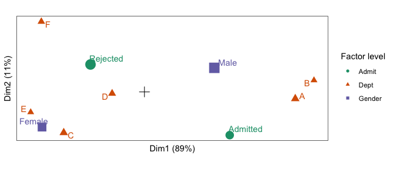

This is an extension of the ordr package, a tidyverse extension for managing ordination models and rendering biplots. ordr provides methods for handling only some of the most common techniques, so ordr.extra provides methods for several additional techniques.
This package is like broom in that it can expand to accommodate additional models until they exceed the bandwidth of its maintainer(s). See this issue for additional discussion, and please comment with any additional suggestions!
installation
ordr.extra is not yet on CRAN. You can install the development version as follows:
# install.packages("devtools")
devtools::install_github("corybrunson/ordr.extra")Note: This package extends tools from ordr to classes of ordination models from several additional packages, but it does not depend on these packages. The reason is so that someone interested in working with, say, candisc models does not have to also install ca, PMA, and the other packages ordr.extra supports. The trade-off is that this user must manually install candisc as well.
example
Joint correspondence analysis1, implemented in the ca package, essentially applies PCA to a high-dimensional contingency table reformatted as a data frame with one observation per row. To illustrate the technique, recall the UC Berkeley admissions data set, reformatted here as a data frame of counts:
# inspect admissions data
head(as.data.frame(UCBAdmissions))
#> Admit Gender Dept Freq
#> 1 Admitted Male A 512
#> 2 Rejected Male A 313
#> 3 Admitted Female A 89
#> 4 Rejected Female A 19
#> 5 Admitted Male B 353
#> 6 Rejected Male B 207We can use ordr syntax to model these data using joint correspondence analysis with the function ca::mjca()2, once we’ve ensured that ca is installed:
# install {ca} if not already installed
if (! "ca" %in% rownames(installed.packages())) install.packages("ca")
# fit JCA model to admissions data
(admissions_jca <- ordinate(UCBAdmissions, ca::mjca, lambda = "JCA"))
#> # A tbl_ord of class 'mjca': (4526 x 5) x (10 x 5)'
#> # 5 coordinates: Dim1, Dim2, ..., Dim5
#> #
#> # Rows (standard): [ 4526 x 5 | 4 ]
#> Dim1 Dim2 Dim3 ... | name mass dist inertia
#> | <chr> <dbl> <dbl> <dbl>
#> 1 2.77 -1.83 1153938. | 1 1 0.000221 0.00672 9.97e-9
#> 2 2.77 -1.83 1153938. ... | 2 2 0.000221 0.00672 9.97e-9
#> 3 2.77 -1.83 1153938. | 3 3 0.000221 0.00672 9.97e-9
#> 4 2.77 -1.83 1153938. | 4 4 0.000221 0.00672 9.97e-9
#> 5 2.77 -1.83 1153938. | 5 5 0.000221 0.00672 9.97e-9
#> # ℹ 4,521 more rows
#> #
#> # Columns (standard): [ 10 x 5 | 6 ]
#> Dim1 Dim2 Dim3 ... | name factor level mass dist
#> | <chr> <chr> <chr> <dbl> <dbl>
#> 1 0.934 -1.32 0.933 | 1 Admit:… Admit Admi… 0.129 0.792
#> 2 -0.591 0.835 -0.591 | 2 Admit:… Admit Reje… 0.204 0.502
#> 3 -1.12 -1.07 0.904 | 3 Gender… Gender Fema… 0.135 0.784
#> 4 0.765 0.732 -0.616 | 4 Gender… Gender Male 0.198 0.534
#> 5 1.65 -0.208 -0.0687 ... | 5 Dept:A Dept A 0.0687 1.22
#> 6 1.86 0.354 0.687 | 6 Dept:B Dept B 0.0431 1.58
#> 7 -0.884 -1.24 -1.73 | 7 Dept:C Dept C 0.0676 1.18
#> 8 -0.354 -0.0487 -0.107 | 8 Dept:D Dept D 0.0583 1.26
#> 9 -1.25 -0.619 -0.957 | 9 Dept:E Dept E 0.0430 1.54
#> 10 -1.13 2.14 2.65 | 10 Dept:F Dept F 0.0526 1.39
#> # ℹ 1 more variable: inertia <dbl>We can then generate a monoplot3 of the group masses for each of the three categorical variables:
# build biplot of admissions JCA model with variance distributed to variables
admissions_jca %>%
confer_inertia("colprincipal") %>%
ggbiplot() +
theme_bw() + theme_biplot() +
geom_origin() +
geom_cols_point(aes(color = factor, shape = factor, size = mass)) +
geom_cols_text_repel(aes(label = level, color = factor), show.legend = FALSE) +
scale_color_brewer(palette = "Dark2") +
scale_size_area(guide = "none") +
labs(color = "Factor level", shape = "Factor level")
acknowledgments
See the ordr repo for full acknowledgments.